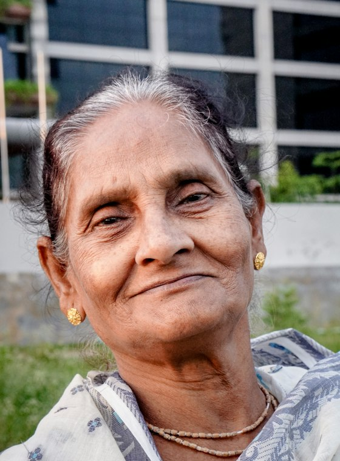
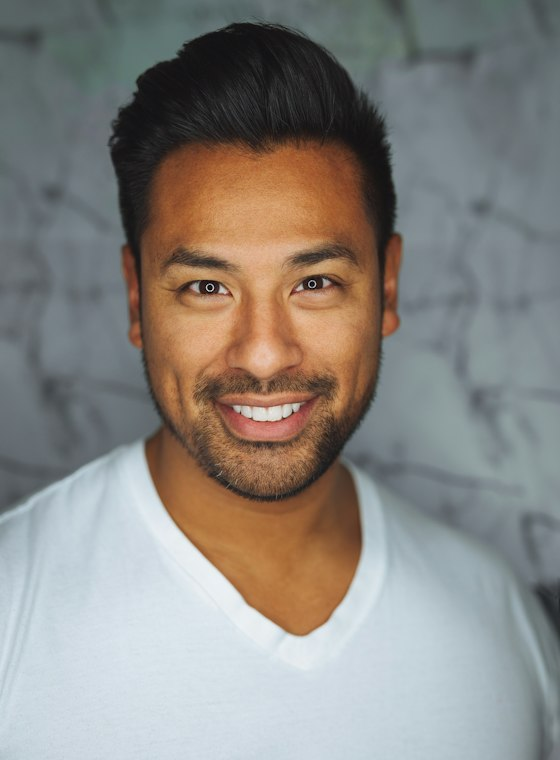
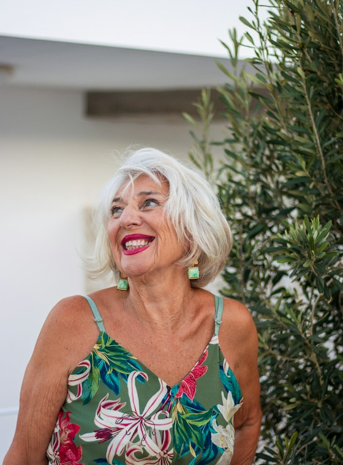
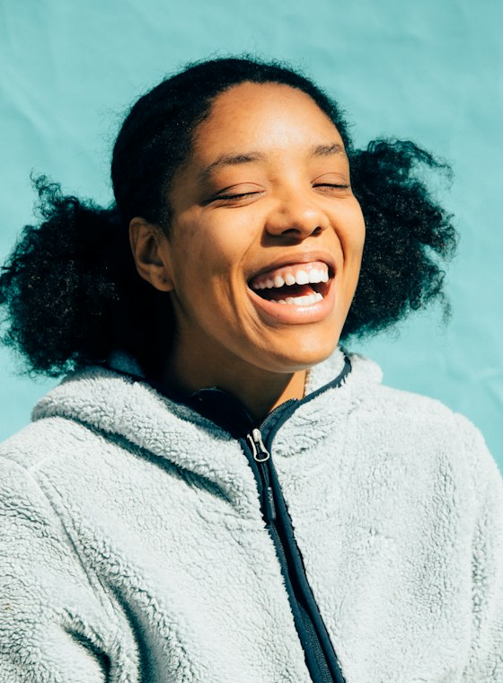
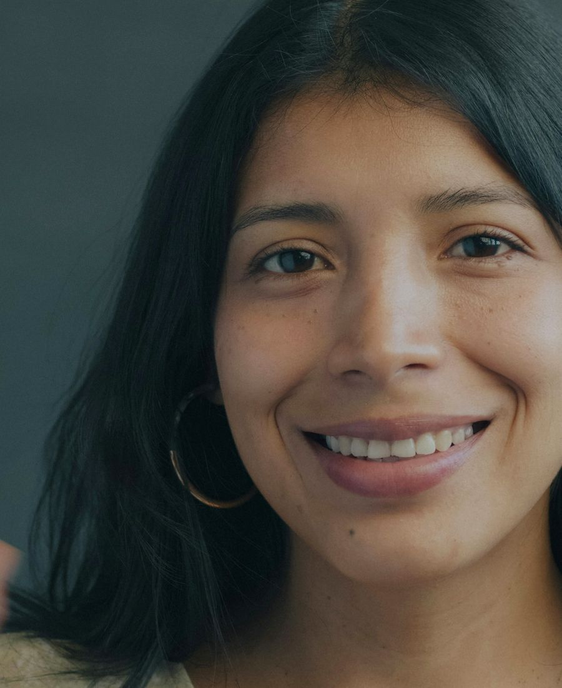
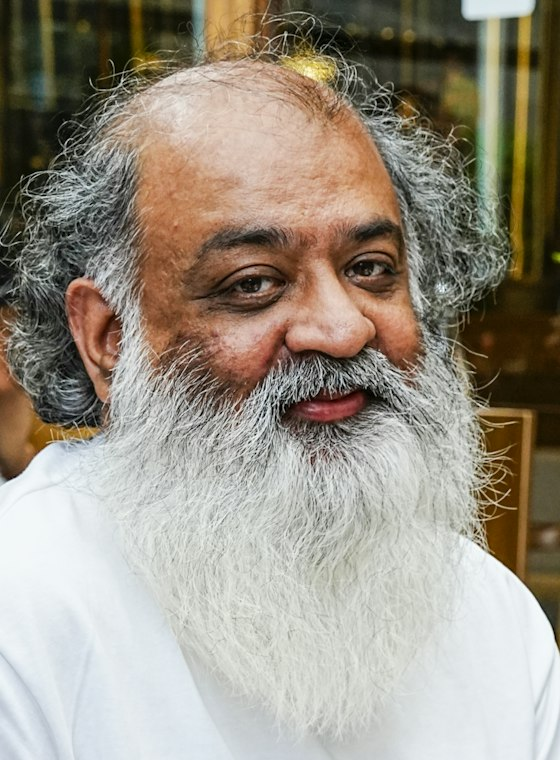
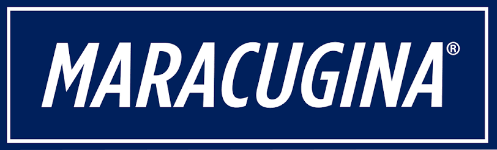

Teste de Comunicação
Mostre um criativo ou uma copy à audiência sintética e receba o score de alinhamento (acima de 75 é positivo), os pontos de atenção e as reações previstas, antes de publicar.
Teste campanhas, criativos, produtos e mensagens com até 1.000 consumidores sintéticos, construídos com dados do IBGE, do Critério Brasil e do social listening da Buzzmonitor. A resposta sai em minutos, antes de você investir.

71 anos · Fortaleza · Classe C2
34 anos · Recife · Classe B2
63 anos · Florianópolis · Classe B1
23 anos · Salvador · Classe C1
41 anos · São Paulo · Classe B1
52 anos · Belo Horizonte · Classe AO que são Consumidores Sintéticos?
O Consumidor Sintético simula como um público reage a algo que ainda não foi lançado. Você descreve a audiência em uma linha, como “mães jovens em São Paulo” ou “Geração Z”. A ferramenta monta o painel com dados demográficos do IBGE e do Critério Brasil e enriquece com o que esse público já diz nas redes, captado pela Buzzmonitor.
O social listening mostra o que o seu público já disse. O Consumidor Sintético simula o que ele diria.
Até 1.000 consumidores sintéticos por audiência.
Características reais, da base populacional do IBGE
Enriquecido por dados de social listening
Uma linha basta. O perfil é completado com dados do IBGE e do Critério Brasil, então a amostra não depende de um briefing perfeito.
Use um questionário pronto ou gerado por IA, apresente um criativo ou uma copy antes de publicar, ou levante hipóteses a partir dos comentários que a Buzzmonitor já monitora.
Respostas simuladas, relatório em PDF com os achados e sugestões de melhoria para levar à próxima reunião.
Por que o método importa
Há três jeitos de ouvir um consumidor antes do lançamento. Só um deles começa pela população.
Mostre um criativo ou uma copy à audiência sintética e receba o score de alinhamento (acima de 75 é positivo), os pontos de atenção e as reações previstas, antes de publicar.
Questionário pronto ou gerado por IA, respondido por até 1.000 consumidores sintéticos. Disposição a pagar, preferência entre conceitos, pontos de melhoria na experiência.
Hipóteses levantadas a partir dos comentários que você já monitora na Buzzmonitor, cada uma com nível de confiança alto, médio ou baixo. Sem escrever um briefing novo.
Converse com um grupo de consumidores sintéticos e aprofunde motivadores e valores por trás de cada resposta.
Avalie através do olhar do público as jornadas, fluxos e telas de seu app, site ou loja antes de ir para o desenvolvimento.
Simule como o público reage a um posicionamento ou a uma nota oficial antes de publicá-los.
Teste campanha, criativo e posicionamento antes de comprar mídia.
Rode pesquisa quantitativa sob demanda e chegue ao campo com hipóteses mais afiadas.
Valide conceito, embalagem, jornada e preço antes de desenvolver.
Encontre barreiras e pontos de melhoria na experiência do cliente.
Leve o resultado de pesquisa para a própria reunião com o cliente, em vez de uma proposta que leva semanas. Vira argumento de venda.
Tempo e orçamento
Recrutar painel, ir a campo e tabular respostas pesa no orçamento, e por isso a pesquisa costuma ficar para os grandes lançamentos. Com consumidores sintéticos, dá para testar cada versão antes de investir e guardar o orçamento de pesquisa para o que já passou pelo filtro.
Pesquisa tradicional
Consumidor Sintético

A Maracugina usou o Teste de Comunicação para validar criativos e copy da campanha de lançamento de uma nova linha de produtos, com uma audiência sintética construída para o público-alvo da marca.
Uma plataforma completa
Ele faz parte da Buzzmonitor, a mesma plataforma que monitora a conversa sobre a sua marca, classifica sentimento, atende o seu cliente e gera relatórios completos. Quando um teste aponta uma objeção, dá para conferir no listening se ela já aparece nas redes, sem trocar de ferramenta.
Social listening com IA: integração com Claude, Buzz Pills e AI Insights
SAC 2.0 para atendimento multicanal
Alertas de termos sensíveis por e-mail e WhatsApp
MCP da Buzzmonitor: os dados da conta no Claude ou no ChatGPT, com Skills de análise prontas
Plataforma otimizada para português e espanhol
A Buzzmonitor foi a primeira plataforma do Brasil a criar um MCP para social listening.
Agende uma demonstração e veja um teste rodando com uma audiência do seu mercado.